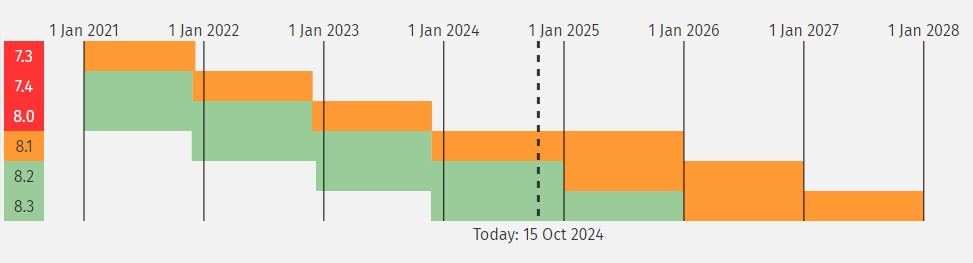
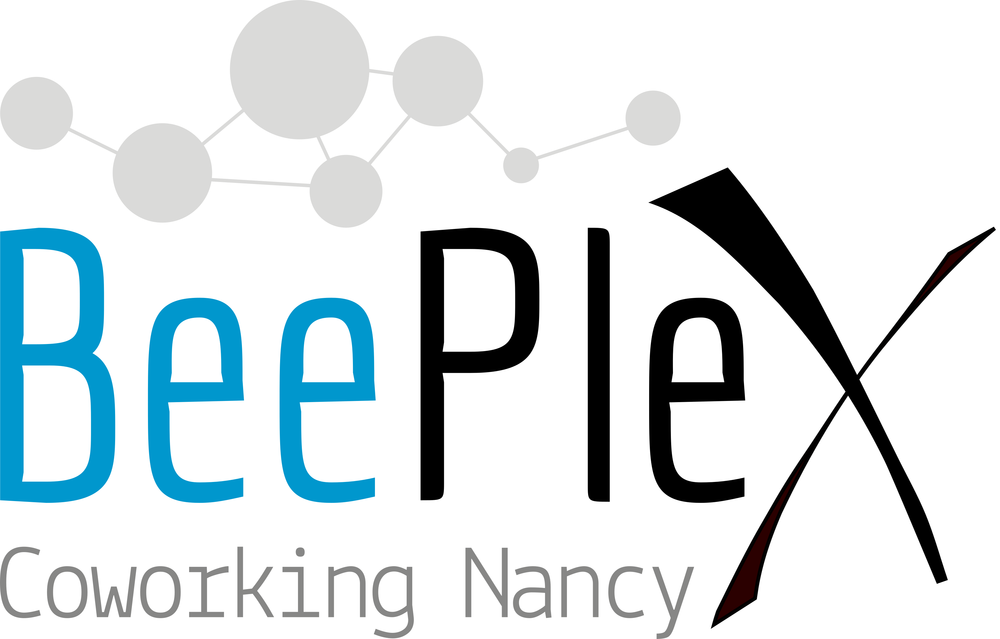

Meetup AFUP
Novembre 2024
- Association créée en 2001 pour promouvoir PHP et son écosystème
- Organise des conférences (Forum PHP, AFUP Day)
- environ 15 antennes dans toute la France
- afup.org/association/antennes
- Meetup tous les mois ⏰
- Du PHP et son environnement
- Et avec des apéros ! 🍻
Nous aider ?

- ⚠️ Speakers ! ⚠️
- https://conference-hall.io/meetup-afup-lorraine
- Locaux
- Sponsoring (manger && boire)

Lorraine Tech Hub
- Acteurs de la tech en Lorraine
- Discussion, veille, entraide, recrutement
- Journée de conférence annuelle ?
- Associations
- Apéros Web Nancy
- AFUP Lorraine
Actu locale
- AST, l’arme secrète des maîtres développeurs - Apéros Web Nancy, mercredi 27 novembre 19h
- https://nancynumerique.com/open-2024/ 20 & 27 novembre, conférences #OPEN
- Le retour des apéro agiles : "Limitation de l'en-cours et système tiré : les bases de Kanban" chez Equasens, 5 décembre à midi, inscription : contact@agilest.fr
- La dette technique n'existe pas - AFUP Lorraine, 12 Décembre, Metz (lieux à venir)
Actu AFUP

AFUP Day 2025

- Vendredi 16 mai 2025
- Lille - Lyon - Poitiers
- Le CFP terminé, programme annoncé en janvier
Billeterie ouverte !
Actu PHP
PHP 8.4 : 21 novembre 2024
Le buzz
https://x.com/OndrejMirtes/status/1855874278488502318
PhpStan 2.0
Aujourd'hui !
- 70 000 000 de boites email ? Vous n'y arriverez jamais ! par Florent Manens
Et pour finir
Beeplex et Beezim pour l'hébergement et l'apéro convivial
Merci à eux !
Bon meetup !